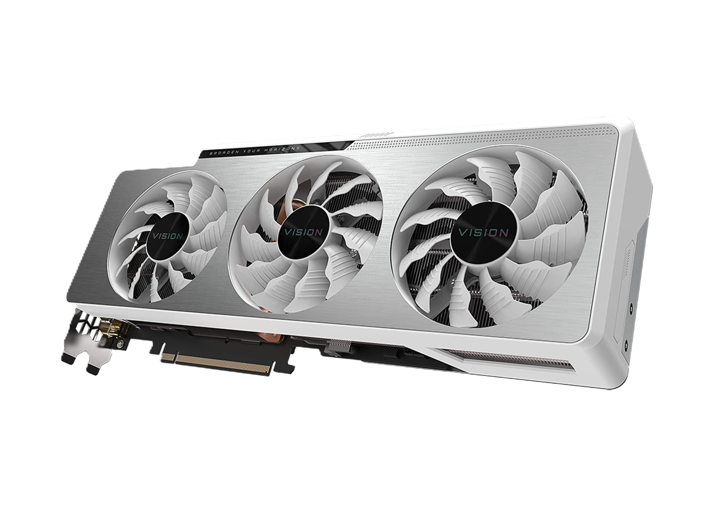
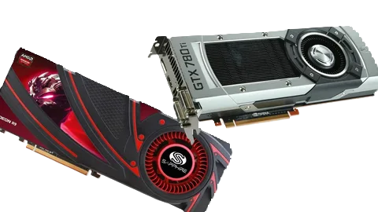
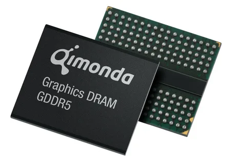
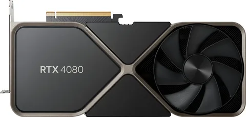

Видеокарта - Это устройство, преобразующее графический образ, хранящийся как содержимое памяти компьютера, в форму, пригодную для дальнейшего вывода на экран монитора. Обычно видеокарта выполнена в виде печатной платы и вставляется в слот расширения материнской платы — универсальный, либо специализированный

Nvidea/Amd - AMD нацелена в большей степени на low-end и mid-range сегмент. Видеокарты Radeon представляют лучшее соотношение цена-качество по всем параметрам. Если же вам нужна максимальная производительность в QHD и 4К, то Nvidia является выбором номер один. Ее технологии во многом превосходят оппонента и позволят вам насладиться максимально красивой графикой с сумасшедшим FPS.

Видеопамять — Это внутренняя оперативная память, отведённая для хранения данных, которые используются для формирования изображения на экране монитора. 1 МБ дополнительной видеопамяти типа VRAM для RiscPC [en]. Добавление памяти позволяло показывать больше цветов и большее разрешение.

Буквенные индексы - Эти буквы могут указывать на серию или поколение карты, а цифры — на конкретную модель. Например, «GTX» обозначает серию игровых видеокарт, а «RTX» — карты основанные на архитектуре технологии трассировки лучей.